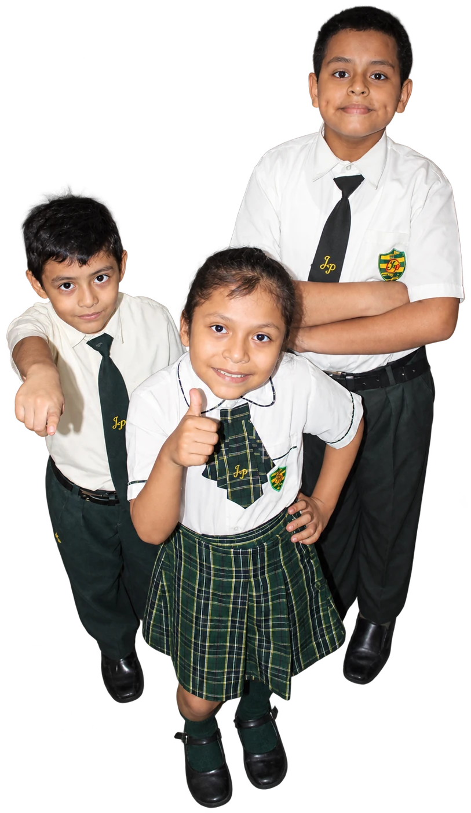
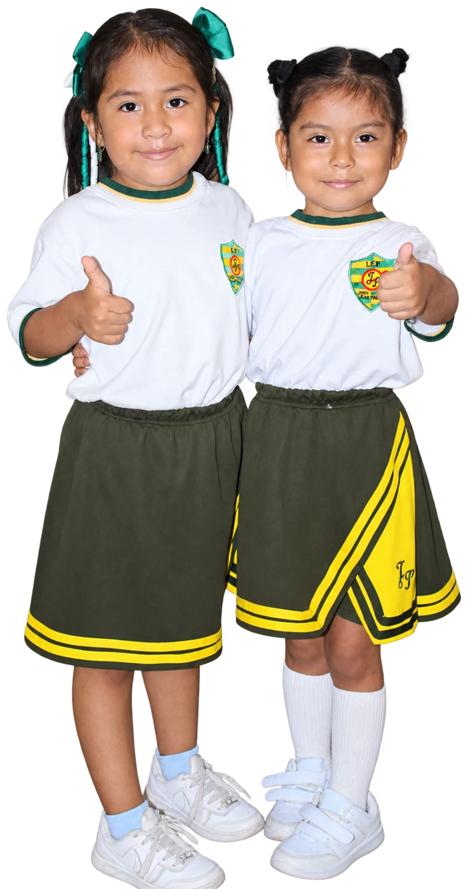
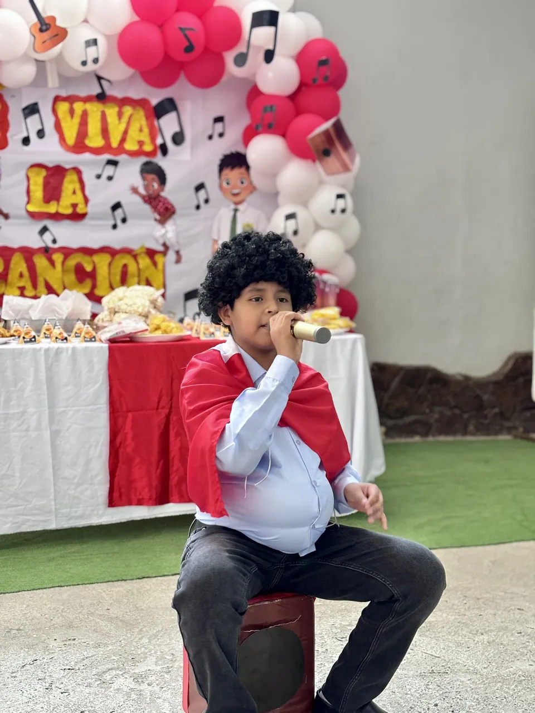
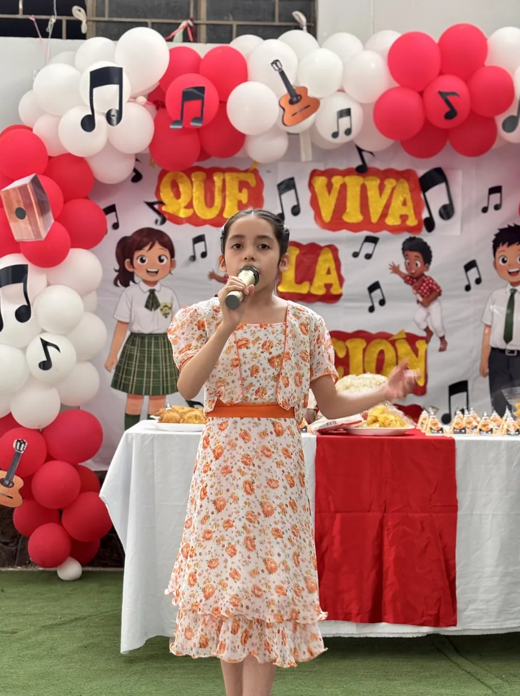
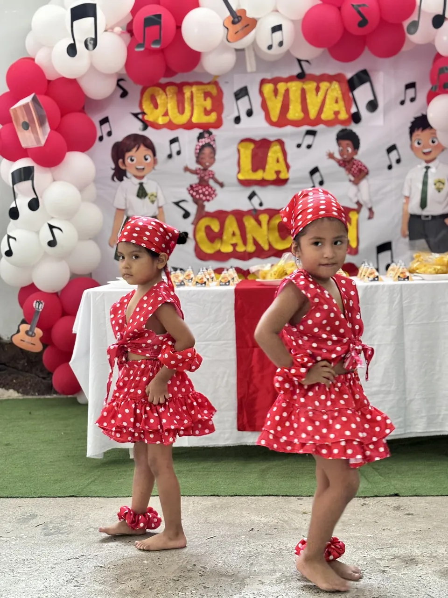
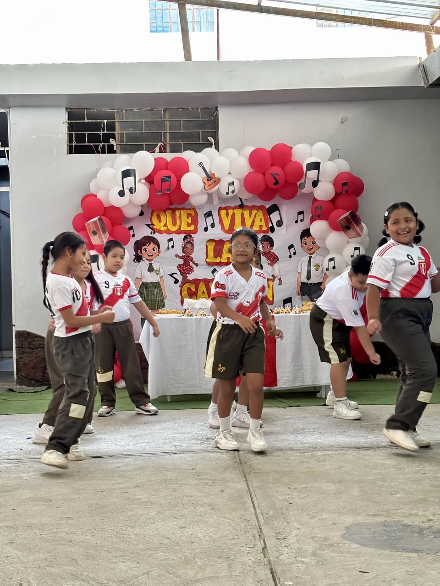
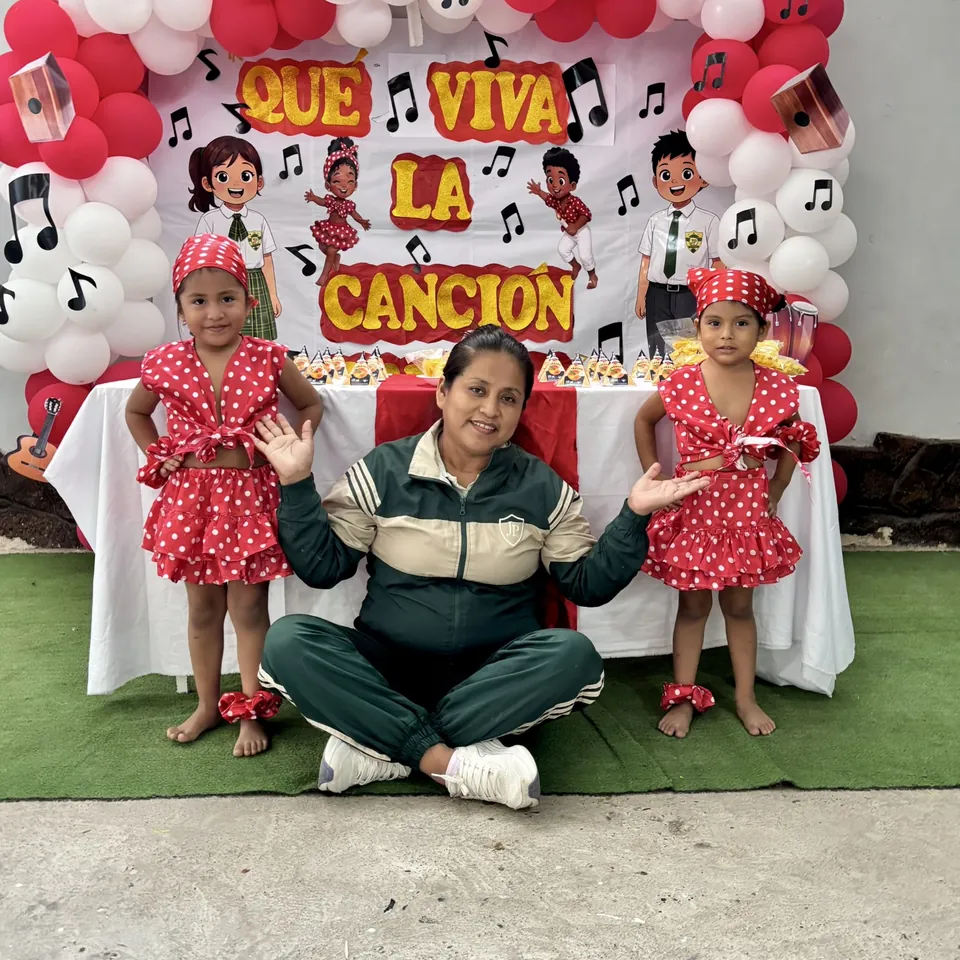

Educación física y deporte
Actividades deportivas que enseñan a ganar, a perder y a depender del compañero.
El deporte, el arte y la convivencia ocupan un lugar propio en el año escolar, con actividades donde participan también las familias.

Actividades deportivas que enseñan a ganar, a perder y a depender del compañero.

Música, teatro y artes plásticas para que cada estudiante encuentre su forma de decir lo que piensa.
Acuerdos de aula, tutoría y actividades que sostienen el respeto entre compañeros.
Encuentros con los padres para acompañar la crianza y el proceso escolar de sus hijos.
Conoce el taller familiarAcompañamos a nuestros estudiantes para que descubran sus habilidades, se expresen con confianza y compartan su talento. Los encuentros artísticos y las presentaciones son oportunidades para aprender, disfrutar y crecer junto a otros.

Les damos ánimo para compartir su voz y disfrutar la experiencia de presentarse ante los demás.

Acompañamos cada paso para que se sientan escuchados y se animen a mostrar lo que saben hacer.

Celebramos la creatividad, la coordinación y el trabajo compartido a través del movimiento.

Compartimos el ritmo, coordinamos nuestros movimientos y disfrutamos de participar en equipo.
Cada participación importa: celebramos la preparación, la perseverancia y la confianza que construyen en el camino.
La semana en que el colegio celebra su fundación con actuaciones, competencias y la participación de todas las aulas.
Los estudiantes presentan los proyectos que trabajaron durante el año, incluidos los de robótica y creatividad digital.
Desfile y actividades cívicas donde cada grado prepara su participación.
Cierre con la entrega de reconocimientos y la despedida de quienes terminan 6.º grado.

Preparar una presentación también es compartir nervios, ensayar juntos y encontrar una voz que nos anime.
Nuestros docentes acompañan esos momentos para que cada estudiante se sienta parte del grupo y disfrute de participar.
Mira más momentos del colegio